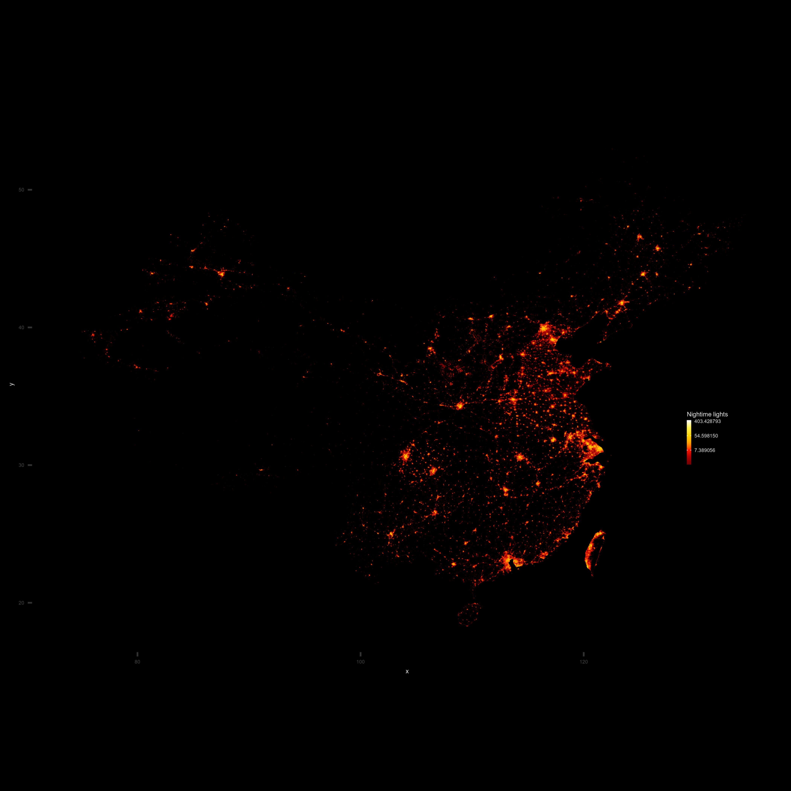

Data scientist · London
Maps, data and things I build.
I’m George. I work at Cisco, measuring internet performance. My research background is in spatial networks and human movement.
This is where I keep my own projects: London gigs, transport networks, housing and the occasional map.
More about me →
Selected projects
All work →
In development
GigRadar
I kept finding out about gigs too late. I’m building a way to follow small London venues and see their events in one place.
TransportTransitFlow
A metro network model with a simulated timetable. What happens to the network when a station closes?
HousingHouse prices & London rail access
Exploring the relationship between house prices and distance to London rail stations.
ResearchRegional hyperlinks & trade flows
Can links between websites help estimate trade between UK regions? The analysis behind our published paper.